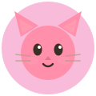
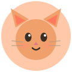
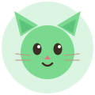
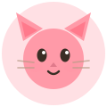
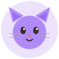
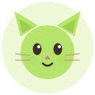

🐱 cathi-ui v4
自研治愈系（cozy）UI 设计系统 · shadcn 风格 Token 架构 · 零依赖
主题
配色 Token
primary
amber
pink
sky
grape
bg
text
窗口面板
文辑
callai
欢迎来到我的折腾日志 🎉
希望这些记录对你也有所启发。或者至少让你在面对同样问题时，少走一些弯路 😄
callai
Ciallo～(∠・ω< )
FRIDAY
Aug 01
19:24
任务卡片
本地 echo 测试
每天
08:00
13:00
+1
下次触发 · 7月12日 16:00
92%
echo
角色卡 / 雷达图



大姐型
SISTER
运动值：HJK-LMA-008
万事难不倒意志坚定的老姐姐
慵懒型
LAZY
运动值：NLAJ-065
佛系天花板，坐姿合意就要生活

运动型
SPORTY
运动值：HJK-ABG-046
肌肉就是最通用的魅力方程式
搜索 & 标签页
Awesome Splatoon3
29 个资源
数字键盘
3 + 3 =
9
✦ 输入答案并按回车确认
❤️❤️
NookPhone 面板
Resident Representative's Desk
Resident Representative's Desk
Managing Animal Island with style.
TUE
5/19
11:57
AM
Tuesday
Active Construction
+
Bridge to North Shore
🌿
+
Museum Art Gallery
🌿
Alerts
ON
Allow visitors
TOOLS
侧边导航布局
基础组件
默认
琥珀
天蓝
葡萄
描边


接收通知
提示：所有组件均为纯手写 CSS，可直接拷进任意项目使用。MIT 授权可商用。
iOS 设置列表
🔔
通知
允许应用发送提醒
🌙
深色模式
跟随系统
🔒
›
隐私与安全
管理权限与密码
ℹ️
›
关于本机
数字角标 Badge

3
9+Toast 通知
底部 Tab Bar
🐱 猫猫岛 App
下面是移动端底部导航栏示例
v4 · Token 架构
三层结构：原始色板 → 语义 token → 组件。
语义 token 存的是 HSL 通道值，所以可以直接写透明度修饰符 hsl(var(--cathi-primary) / .14)，
组件里不出现任何硬编码颜色。切到暗色只是换一组变量值。
语义 token（成对出现）
--cathi-background / --cathi-foreground--cathi-card / --cathi-card-foreground--cathi-primary / --cathi-primary-foreground--cathi-muted / --cathi-muted-foreground--cathi-accent / --cathi-accent-foreground--cathi-destructive / --cathi-destructive-foreground把鼠标放到色块上，颜色随主题实时变化（变量驱动，非固定值）。
透明度修饰符
/ α
8%
16%
28%
45%
100%
同一个 token 派生出一整套层级，不需要维护
-soft 变量。.my-chip {
background: hsl(var(--cathi-primary) / .14);
color: hsl(var(--cathi-mint-700));
border: 1px solid hsl(var(--cathi-border));
}
圆角：一个基准，calc 派生
xs
sm
md
lg
xl
:root { --cathi-radius: 1.5rem; } /* 改这一行 */
主色实时换肤
拖动色相，整页按钮 / 标签 / 进度 / 焦点环一起变。
标签
v4 · 按钮变体
BEM 类（.cathi-btn--ghost）继续可用；v4 另外支持 shadcn 风格的
data-variant / data-size / data-state 属性，语义更清晰。
v4 · 表单全家桶
输入框 / 帮助 / 错误态
2–16 个字符，支持中文。
邮箱格式不正确
勾选 / 单选 / 滑块 / 开关
深色模式
v4 · 反馈
Alert（5 种语义）
💡
提示
默认用主色系，适合一般性说明。
ℹ️
信息
新版本已发布。
✅
成功
订单已提交。
⚠️
警告
库存仅剩 3 件。
⛔
错误
支付失败，请更换支付方式。
Skeleton / Spinner / Tooltip
Loading…
在上方出现
在下方出现
左侧
右侧
⌘K
打开命令面板
v4 · 浮层
Dropdown / Dialog / Sheet
打开菜单 ▾
对话框用原生
<dialog>，自带焦点陷阱与 Esc 关闭；抽屉只是给它加了 data-side。Accordion（零 JS）
为什么改成 HSL 通道值？▾
因为这样可以写
hsl(var(--x) / .14)，一个变量派生出整套明暗层级，不用再维护一堆 -soft。旧代码会坏吗？▾
绝大多数不会。
--cathi-bg / --cathi-text / --cathi-surface 等别名全部保留，只有 --cathi-primary 和 --cathi-border 变成通道值，需要包一层 hsl()。暗色模式怎么开？▾
在任意祖先元素加
.cathi-dark、.cathi-theme-dark 或 data-theme="dark" 即可，不随系统自动切换（和 shadcn 的 class 策略一致）。
v4 · 数据展示
+9
| 订单号 | 商品 | 状态 | 金额 |
|---|---|---|---|
| #C-1024 | 猫窝 · 云朵款 | 已完成 | ¥ 129.00 |
| #C-1025 | 逗猫棒 · 羽毛 | 待发货 | ¥ 39.00 |
| #C-1026 | 自动饮水机 | 已退款 | ¥ 259.00 |
| #C-1027 | 猫抓板 · 瓦楞纸 | 运输中 | ¥ 59.00 |
| 合计 | ¥ 486.00 | ||
📭
还没有收藏
看到喜欢的作品，点右上角的小心心就会存到这里。
头像组 / Toggle 组
Toggle 用
aria-pressed 表达选中态，读屏器可读。